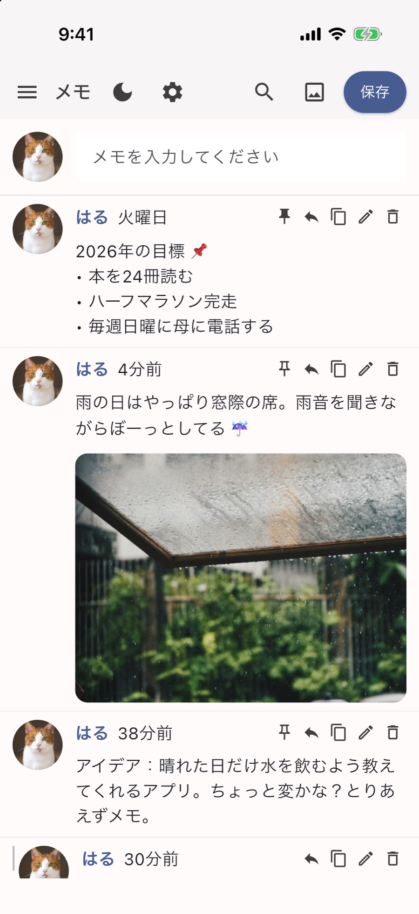

Solche 機能ガイド
気になる項目を押すと、くわしい説明と実際のアプリ画面が見られます。スクリーンショットはiPhoneのものですが、ほかの端末でも同じように使えます。
書く
投稿する
画面の一番上にあるメモを入力してくださいの欄に書いて、右上の保存を押すと、タイムラインの一番上にぽんと載ります。Enterで入れた改行もそのままきれいに残ります。
投稿ごとに、いつ書いたかの時間もいっしょに表示されます。書いたばかりの投稿は「たった今」「5分前」のように親しみやすく、数日たった投稿は「昨日」「金曜日」のようにひと目でわかるように表示します。
写真を付ける
上部バーの写真アイコンを押して、写真を選んでみてください。一つの投稿に最大10枚まで入ります。文章なしで写真だけ載せても、ひとことを添えて残してもOKです。
昔の投稿を振り返る
下へスクロールしていくと、昔書いた投稿が途切れることなく、するすると続けて読み込まれます。
投稿を扱う
返信する
投稿の右側にある返信アイコン（曲がった矢印）を押すと、元の投稿を見ながら、そのすぐ下に考えを書き足せます。最初に書いた考えを続けたり、あとから後日談を残したりするのにぴったりです。
スレッドで見る
返信は元の投稿の下に縦線でまとめて表示されるので、考えがどう流れていったのかがひと目で読めます。もちろん、返信にさらに返信を付けることもできます！
一番上に固定する
画びょうの形のボタンを押すと、その投稿がタイムラインの一番上に固定されます。もう一度押せば、いつでも固定を解除できます。
固定した投稿がいくつもあるときは、好きな順番に並べ替えられます。スマホでは投稿を長押ししてドラッグ、パソコンではマウスでそのままドラッグすればOKです。
編集、コピー、削除
それぞれの投稿の右上に並んだ小さなボタンを使ってみてください。鉛筆は編集、重なった四角はテキストのコピー、ごみ箱は削除です。うっかり消してしまわないよう、削除のときはもう一度確認します。
写真を見る
写真を大きく見る
タイムラインに載せた写真をタップすると、画面いっぱいに大きく開きます。二本の指で拡大してじっくり見たり、横にスワイプして同じ投稿の写真を順番に眺めたりしてみてください。
パソコンではキーボードの矢印キー（← →）で写真を送り、Escキーひとつですぐに閉じられます。
探すと整理
検索
上部の虫めがねボタンを押して、覚えている単語を入力してみてください。その単語を含む投稿だけを選んで表示し、Xを押すと元のタイムラインに戻ります。
メニューとフォルダ
左上のメニュー（≡）を開くと、自分で作ったフォルダの一覧と、それぞれに入っている投稿の数がひと目でわかります。フォルダを押すとすぐにそのフォルダのタイムラインに移動し、新しく書く投稿もそのフォルダにたまっていきます。
フォルダの作成と管理
フォルダ作成で新しい部屋を作り、フォルダ管理でいつでも名前を変えたり整理したりできます。
もしフォルダを削除しても、その中にあった大切な投稿は消えずに、基本フォルダへ安全に移動するのでご安心ください。（基本フォルダそのものは削除できません。）
プロフィール
プロフィール写真と名前
メニュー → プロフィール編集で、お気に入りのプロフィール写真と名前を設定してみてください。タイムラインのすべての投稿に、自分のプロフィールがいっしょに表示されます。
プロフィールを隠す
プロフィールアイコンの表示のスイッチをオフにすると、丸いプロフィール部分が消えて、本文のスペースがぐっと広くなります。デスクトップでウィンドウを細くして使うときに、特におすすめの設定です！
カスタマイズ
設定画面
上部の歯車アイコンか、メニュー → 設定から入ると、文字サイズ、ダークモード、言語、背景色を好みに合わせて変えられ、データのバックアップ・復元もできます。
ダークモード
上部バーの月の形のボタンを押すと落ち着いたダークモードに、太陽の形のボタンを押すと明るい昼の画面にすぐ切り替わります。
文字サイズと行間
文字サイズの調整でスライダーを左右に動かして、いちばん読みやすい大きさを探してみてください。プレビューの文章で、すぐに雰囲気を確認できます。
行間も狭く・標準・広くの3段階から選べます。
背景色
背景色の調整で、好きな色合いを直接選ぶか、R・G・Bの数値を入力してみてください。選んだ背景のトーンに合わせて、ボタンや名前の色も調和するように変わります。
11言語
初めて起動すると端末の言語に自動で合わせ、設定の言語の選択で11言語の中からいつでも好きな言語に変えられます。
English, 한국어, 日本語, 简体中文, 繁體中文, Español, Português, Français, Deutsch, Bahasa Indonesia, Русский
バックアップと復元
データのバックアップ
設定 → データのバックアップを押すと、これまでに書いたすべての投稿、写真、フォルダ、設定がひとつのファイルにまとめて保存されます。保存場所も自分で選べます。アプリを削除したり機種変更したりする前に、忘れずにバックアップしてください！
データの復元
設定 → データの復元で、保管しておいたバックアップファイルを選ぶと、そのときのタイムラインと設定にそのまま戻ります。いま端末にある内容はバックアップファイルの内容で上書きされるので、今の投稿も残したい場合は、復元の前に先にバックアップしておいてください。
もし正しいSolcheのバックアップファイルでなければ、自動で復元を中止し、今のデータを安全に守ります。
最後の復元を元に戻す
復元を終えた直後は、設定画面に最後の復元を元に戻すボタンが表示されます。もし古いバックアップファイルを間違えて選んでしまっても、慌てずに復元直前の状態へすぐ戻せます。
新しい端末に移す
使っていた端末でバックアップファイルを作ったあと、メールやクラウドドライブ、USBなど好きな方法で新しい端末にファイルを移し、復元を押すだけで引っ越し完了です。
端末のどの場所にデータが保存されているかは、メニュー → このアプリについてでそのまま確認できます。

よくある質問
インターネットがつながらない場所でも使えますか？
もちろんです！Solcheはインターネットに一切接続しないアプリなので、飛行機の中や電波の届かない場所でも、いつもと同じように快適に使えます。
自分の投稿は誰が見られますか？
見られるのは自分だけです。すべての投稿と写真は自分の端末の中だけに保存され、外部のサーバーに送信されることは決してありません。アカウントそのものがないので、パスワードが漏れる心配もありません。
スマホとパソコンは自動で同期されますか？
いいえ。サーバーを置かない仕組みなので、端末間の自動同期には対応していません。その代わり、端末を移すときはバックアップファイルひとつで、写真や設定まで丸ごと移せます。
アプリを削除すると投稿も消えますか？
はい。すべてのデータはサーバーではなくアプリの中だけに保存されるため、アプリを削除すると投稿もいっしょに消えます。アプリを削除したり機種変更したりするときは、必ず先にバックアップファイルを作っておいてください！
無料ですか？
はい！最初から最後まで無料で、読む流れを邪魔する広告も一切ありません。
使っていてバグを見つけました／提案したいアイデアがあります！
いつでも大歓迎です！Ko-fiページからお気軽にお知らせください。